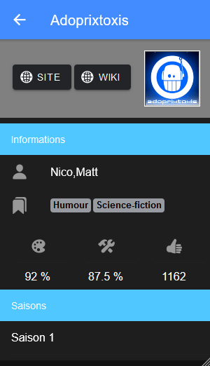
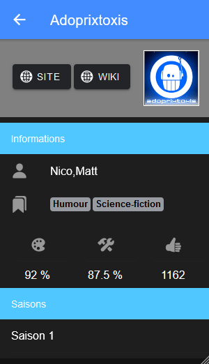

Les Sagas MP3
Une illustration de la culture DevOps
Connaissez-vous... ?

Le Donjon de Naheulbeuk, créé par John Lang (AKA Pen of Chaos) en 2001

Le point commun entre ces sagas ?


Mes besoins
- Utiliser mon smartphone pour suivre mes sagas
- Accéder sur une même interface à toutes les informations des sagas
- Recevoir des notifications lorsque de nouveaux épisodes sont disponibles
- Pouvoir écouter et/ou télécharger les épisodes
Les données à manipuler
Typologies et sources de données
- Les sagas et leurs métadonnées (auteur, genre, synopsis, etc.) ↪ Liste des sagas Netophonix
- Les saisons, épisodes et images ↪ Archive de Clator
- Les actualités (nouvelles sagas, nouveaux épisodes, castings, etc.) ↪ Flux RSS du forum Netophonix
- Les favoris ↪ Propres à l'application
Vers la centralisation des données
- Données des sources externes complexes à isoler
- Peu de mises à jour sur les sources externes (1 fois par jour maximum)
- Dépendance à un service externe

Gestion de la structure de données
Késako ?
- Base de données relationnelle (PostgreSQL) décrite en SQL
- Chaque version du backend s'attend à avoir une structure de données propre à elle-même
- La structure de la base de données doit pouvoir évoluer avec les versions du backend
Liquibase à la rescousse
- Lors de son démarrage, le backend fait appel à la bibliothèque Liquibase
- Liquibase exécute en base de données les scripts SQL qui lui sont fournis
- Si un script SQL a déjà été exécuté auparavant (dans une précédente version du backend par exemple), il est ignoré
Liquibase à la rescousse
--liquibase formatted sql
--backend-version:1.0
--changeset lessagasmp3:create-table-saga
CREATE TABLE IF NOT EXISTS saga (
id bigint primary key,
synopsis text,
title character varying(255)
);
--rollback drop table saga;
--backend-version:1.1
--changeset lessagasmp3:add-saga-status
ALTER TABLE saga ADD status character varying(255);
--rollback alter table saga drop column status;
Scraping du tableau Netophonix
<tr class="row1">
<td class="gen medpad" align="center">
<span id="808"> 16 </span>
</td>
<td class="genmed medpad" align="left">
<a href="https://aghostslife.jimdofree.com" class="topictitle" target="_blank" style="float: left; display: block; padding-top: 4px; padding-left: 4px;"> A Ghost's Life </a>
<a href="http://wiki.netophonix.com/A%20Ghost%27s%20Life" style="float: right; padding-top: 4px;">
<img border="0" title="Plus d'infos sur le Netowiki" alt="Plus d'infos sur le Netowiki" src="./images/wikilink.gif"/>
</a>
</td>
</td>
<td class="genmed medpad" align="center" valign="middle"><span class="gen">Sarausa</span></td>
<td class="genmed medpad" align="center" valign="middle"><span class="gensmall">Fantastique</span></td>
<td class="gennotetab" align="center" valign="top" width="15">
<span class="gennotetab">
<img align="top" valign="middle" border="0" alt="Niveau artistique en jaune et niveau technique en bleu." title="Niveau artistique en jaune et niveau technique en bleu" src="images/jaugeslist.php?art=171&tech=167">
<td class="genmed medpad" align="center" valign="middle">
<span class="gensmall">
<a href="./saga_avis.php?saga_id=808¬es_usid=808&critview=1&startlist=0&saga_seek=&orderlist=ASC&modelist=titres">12 avis</a>
</span>
</td>
</span>
</td>
<td class="genmed medpad" align="center" valign="middle">
<span class="gensmall">104</span>
</td>
</tr>
Comment procéder ?
- Téléchargement du code HTML fourni par la page du tableau des sagas Netophonix
- Pour chaque ligne
<tr>du tableau, on créé / met à jour une saga dans la BDD - Parcours de la structure du DOM avec la bibliothèque HtmlUnit
Lecture de l'archive de Clator
Comment procéder ?
- Ouverture du fichier et extraction du contenu sous forme de tableau de lignes de texte
- Récupération des données dans l'ordre d'apparition dans le PDF (ligne 1 = auteur, ligne 2 = musique, etc.)
- Inconvénient notable : si un fichier est mal formaté, les mauvaises données peuvent être importées
- Extraction des lignes de texte via la bibliothèque Apache PDFBox®
Scraping du flux XML


Comment procéder ?
- Le forum Netophonix dispose du module phpBB Smartfeed exposant un flux XML
- Les donnnées envoyées dans le flux sont paramétrables via son URL
https://forum.netophonix.com/smartfeed.php?forum=1&firstpostonly=1&limit=NO_LIMIT&sort_by=postdate_desc&feed_type=RSS2.0&feed_style=HTMLSAFE
<item>
<title>Nouveautés :: Network Evil 6 - Arc Chris & Pims - Chapitre IV :: Auteur Kwaam</title>
<link>https://forum.netophonix.com:443/viewtopic.php?f=1&t=18929&p=228153#p228153</link>
<description><![CDATA[Bonjour à tous !Bonjour à tous !On est à l’avant dernier chapitre du périple de Chris & Pims ! Accrochez vous bien parce que ce chapitre vous réserve bien des surprises avec la course poursuite d’Abba qui n’en finit plus. Et que dire pour le prochain et dernier chapitre… Soyez prêt ! Bonne écoute !Après leur rencontre avec Abba, Chris & Pims l'ont poursuivie jusqu'à atteindre un porte avion qui serait sa base d'opération.Spotify : https://open.spotify.com/show/1I6CHnQoMTfAYvWeDUCMdeDeezer : https://deezer.com/show/3889637Apple Podcasts : https://podcasts.apple.com/us/podcast/n ... 1635379871Youtube : https://www.youtube.com/playlist?list=P ... WkO_tRtB28Podcloud : https://podcloud.fr/podcast/network-evil-6Google Podcasts : https://podcasts.google.com/feed/aHR0cH ... Nhc3QvbmU2Page de la série : https://www.wavesavengers.fr/creations- ... /episodes/Flux RSS de l’émission : https://www.wavesavengers.fr/feed/podcast/ne6DISTRIBUTION : https://www.wavesavengers.fr/creations- ... tribution/]]></description>
<author>no_email@example.com (Kwaam)</author>
<category>Nouveautés</category>
<comments>https://forum.netophonix.com:443/posting.php?mode=reply&f=1&t=18929</comments>
<pubDate>Wed, 09 Nov 2022 23:43:58 GMT</pubDate>
<guid isPermaLink="false">https://forum.netophonix.com:443/viewtopic.php?f=1&t=18929&p=228153#p228153</guid>
</item>
Comment procéder ?
- Même principe que pour le scraping du tableau des sagas
- Extraction du contenu via la bibliothèque Java API for XML Processing (JAXP)
Exposition des données par API
Définition et utilité d'une API
- API : Application Programming Interface (= Interface de Programmation Applicative en français)
- Permet d'accéder aux fonctions ou aux données d'une application à distance
- Standard dans les années actuelles
Usage de notre API
Un appel à l'URL suivante :
https://api.les-sagas-mp3.fr/api/saga?offset=0&limit=10{
"content": [
{
"id": 563,
"title": "1287"
},
{
"id": 570,
"title": "14.92",
},
[...]
],
"totalPages": 108,
"totalElements": 1077,
"number": 0,
"size": 10,
"numberOfElements": 10,
"sort": {
"sorted": true,
"unsorted": false,
"empty": false
}
}Mais les gens, ils ne vont pas lire/écrire du JSON ?
- Ils devraient - Nan, je déconne
- La mise en forme des données à l'affichage est déléguée à un autre composant : le "frontend"
Dans notre cas, on veut pouvoir acc√©der aux donn√©es par 2 moyens : un site web üñ•Ô∏è et une application Androidüì±. Ce sont donc 2 composants diff√©rents qui devront se connecter √† l'API.
Une interface web et Android
Deux technologies complètement différentes
- Un site web : ensemble de fichiers HTML, JS, CSS interprétés par un navigateur
- Une application Android : exécutable fonctionnant avec l'Android Runtime (ART) spécifique à la plateforme
- On veut vraiment maintenir ces 2 applications en parallèle ?
- La question est vite répondue : NON

Ionic, un framework pour les générer toutes
- Génère des applications compatibles sur différentes plateformes : Web, Desktop, Android, iOS
- Un projet Ionic peut s'écrire en Angular, React ou Vue
- Ionic propose un large choix de composants prêts à l'emploi : menu de navigation, boutons flottants, listes, etc.
Ionic pour notre usage
 

Ca marche sur mon poste. Et maintenant ?
Les limites de mon ordinateur
- Inaccessible depuis internet
- On utilise le nom de domaine localhost et non les-sagas-mp3.fr
- Pas disponible 24/7. J'éteins mon ordinateur quand je ne m'en sers pas...
La solution : utiliser un serveur
Un serveur est un ordinateur distant. A nous de le configurer pour qu'il réponde à nos besoins :
- Allocation d'une IP publique x.x.x.x
- Pointage de notre nom de domaine les-sagas-mp3.fr vers son IP publique
- Installation de nos composants API et App pour les rendre disponibles
Et pourquoi pas plusieurs serveurs ?
- Environnement de production : utilisé par les utilisateurs finaux
- Environnements de test : utilisé par les développeurs, testeurs...
Quel type de serveur ?
Des serveurs permettant d'héberger une application web, une application Java et une base de données PostgreSQL
PROBLEME : ça n'existe pas sur étagère.
SOLUTION : créer notre propre infrastructure dans le Cloud
Naufrage dans le Cloud
Création du serveur
Dans le Cloud, il n'y a pas que un serveur à créer
- Un réseau VPC
- Un sous-réseau
- Les règles de pare-feu
- Une instance de machine virtuelle avec un disque persistant
- Une IP publique
- Les entrées DNS api*.les-sagas-mp3.fr et app*.les-sagas-mp3.fr
- Un bucket de stockage de fichiers
Comment on procède ?
Pour chacun de ces éléments, un formulaire à saisir dans la console du fournisseur de Cloud
Les manipulations sont à répéter autant de fois qu'il y a d'environnements de test ou de production
➕ il y a d'opérations manuelles
‚ûï il y a de risques d'erreurs
Et si on automatisait tout ça ?
- On décrit les ressources que l'on souhaite obtenir dans un format compréhensible par Terraform
- Terraform va se connecter au fournisseur de Cloud souhaité (Amazon, Google, Microsoft...)
- Terraform va comparer l'existant avec l'état souhaité et appliquer les changements
Et si on automatisait tout ça ?
resource "google_dns_record_set" "dns" {
project = "les-sagas-mp3"
name = "app.les-sagas-mp3.fr"
type = "A"
ttl = 300
rrdatas = [34.163.30.76]
}La machine virtuelle est une coquille vide
Une fois créé, le serveur est vide. Il faut encore installer et configurer :
- Une base de données PostgreSQL
- Java
- Un serveur web (Nginx en l'occurrence)
- Nos composants API et App
- L'exposition HTTPS
Et si on automatisait tout ça ?

- On décrit l'état que l'on souhaite donner au serveur dans un format compréhensible par Ansible
- Ansible va se connecter à la machine créée par Terraform grace à son IP publique
- Ansible va comparer l'existant avec l'état souhaité et appliquer les changements
✅ C'est le même principe que Terraform
Et si on automatisait tout ça ?
- name: Download Java binaries
get_url:
url: "https://download.java.net/java/GA/jdk19.0.1/afdd2e245b014143b62ccb916125e3ce/10/GPL/openjdk-19.0.1_linux-x64_bin.tar.gz"
dest: "/tmp/openjdk.tar.gz"
checksum: "7a466882c7adfa369319fe4adeb197ee5d7f79e75d641e9ef94abee1fc22b1fa"Et si on automatisait l'automatisation ?

Oui, il en reste des choses à automatiser !
- Les commandes Terraform et Ansible exécutées la main depuis son poste...
- pour chacun des environnements dont on a besoin ...
- avec à chaque fois, la configuration à adapter au contexte...
- et la source de nos composants API et APP qui proviennent toujours du poste de développement
Here comes the CI/CD
Travailler à plusieurs
Quand plusieurs développeurs travaillent chacun de leur côté, comment faire pour se synchroniser ?
- On copie les fichiers sur une clé USB
- On s'envoit les fichiers par mail
- On dépose ses fichiers sur un Drive
- On utilise un logiciel de gestion de versions
Aujourd'hui, le logiciel le plus répandu est Git. GitHub est une plateforme qui héberge des dépôts git.
GitHub et les Pull Requests
Une pull request (demande de tirage) simule la fusion de 2 versions de code source
Sur cette simulation, les participants peuvent :
- üìù reparcourir l'ensemble des changements
- ü™∂ annoter des lignes, proposer des am√©liorations
- ✔️ effectuer des traitements automatiques sur le code fusionné
Tant que la pull request n'est pas validée, la version de production reste intacte
Les traitements automatiques d'une PR
- ⚙️ la compilation du code
- ✅ des tests automatisés
- üöö le d√©p√¥t du livrable dans un r√©pertoire de stockage
- üö© la cr√©ation d'un nouveau serveur d√©di√© √† la version en cours de test (CD) ↪ Avec l'outillage Terraform et Ansible vu pr√©c√©demment
En résumé
- CI (Continuous Integration) : teste et compile les composants API et APP et archive les résultats dans un répertoire accessible de la CD
- CD (Continuous Deployment) : s'assure du bon fonctionnement de l'infrastructure cible et installe les composants fournis par la CI
Conclusion
Un long projet qui a beaucoup évolué
- Différents essais à plusieurs niveaux : outils de développement, méthodes de travail, hébergeurs...
- Un fil rouge pour faire de la veille et se former
- Une nouvelle perspective pour la communauté Netophonix
Et le DevOps dans tout ça ?
- Migrer des données de façon flexible
- Exposer nos données de façon standard via un contrat de service
- Proposer un support mobile et web
- Maîtriser les environnements de production et de test
- Permettre de travailler à plusieurs en autonomie
- Formaliser des validations manuelles et automatiques des changements
Et le DevOps dans tout ça ?
Le DevOps n'est pas un rôle mais une culture.
La suite ?

L'intégralité du projet est disponible à l'adresse : github.com/les-sagas-mp3

On développe le projet ensemble sur Twitch : twitch.tv/titohma
Merci
Les extraits audio et des illustrations appartiennent à leurs propriétaire respectifs (voir les slides correspondantes)
Tout le reste est sous licence GNU Affero General Public License